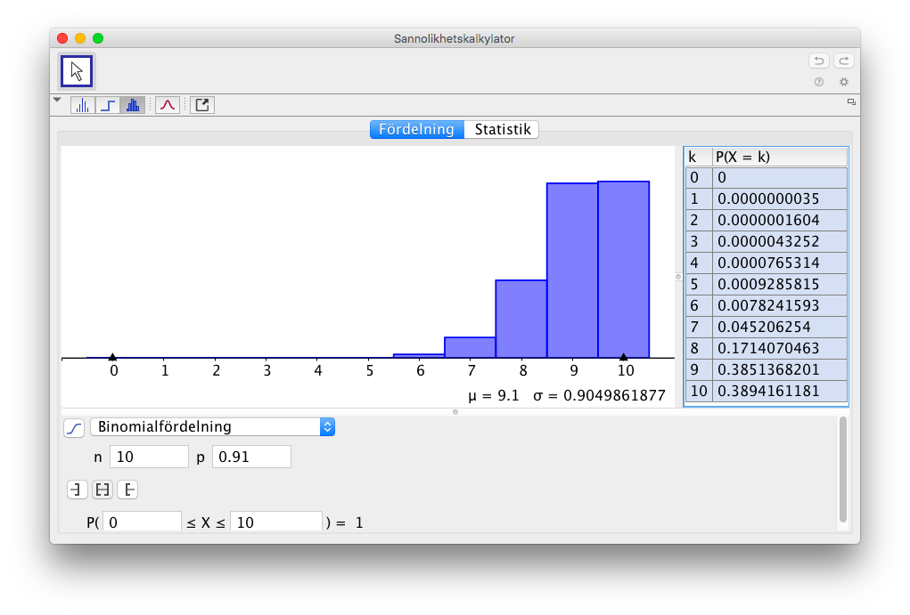
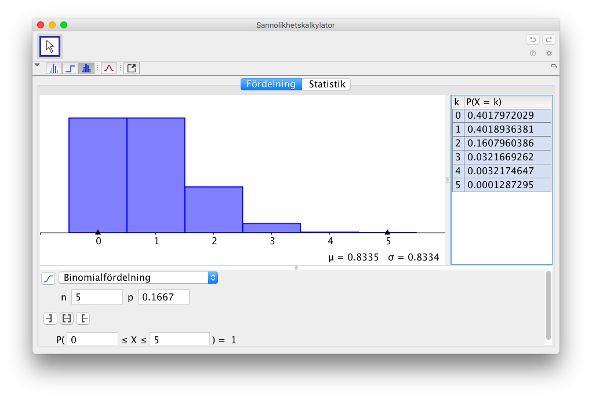

12. Upprepat försök
Bertil sår blommor. På påsen står att fröna gror med sannolikheten 95 %. Han sår 10 st frön. Han funderar på sannolikheten för att minst 9 frön gror.
Sannolikheten att minst 9 frön gror betyder att 9 eller 10 frön gror.
Har vi 9 frön som skall gro skall 1 frö inte gro. Sannolikheten för att ett frö gror är 0,95 och att det inte gror är 1-0,95=0,05. Sannolikheten för att 9 frön gror och 1 inte gror är \( 0,95 \cdot 0,95 \cdot 0,95 \cdot 0,95 \cdot 0,95 \cdot 0,95 \cdot 0,95 \cdot 0,95 \cdot 0,95 \cdot 0,05 = 0,95^9 \cdot 0,05 \).
Dessa kombinationer kan vi bilda på \( \displaystyle\displaystyle{10 \choose 9} \) olika sätt. Betyder att sannolikheten för att 9 frön gror är \( \displaystyle{10 \choose 9}0,95^9 \cdot 0,05 \).
På motsvarande sätt bildar vi sannolikheten för att alla 10 frön gror. Sannolikheten att 10 frön gror och 0 inte gror är \( 0,95^{10}\cdot 0,05^0 \).
Dessa 10 frön kan vi bilda på \( \displaystyle{10 \choose 10}=1 \) olika sätt.
Vi får alltså sannolikheten för att minst 9 frön gror är \( \displaystyle{10 \choose 9}0,95^9 \cdot 0,05 + \displaystyle{10 \choose 10}0,95^{10}\cdot 0,95^0 = 0,91386\approx 0,914 \).
I sannolikheter som ovan där vi har upprepade försök av olika kombinationer talar vi om binomialsannolikhet.
Låt \( p \) vara sannolikheten att A sker. Då sker inte A med sannolikheten \( 1-p \). Sannolikheten för att A sker \( k \) gånger av n är \( \displaystyle{n \choose k} p^k \cdot (1-p)^{n-k}. \).
Upprepat försök kallas också för binomialsannolikhet.
Exempel 1 Jobba på GeoGebras statistikdel och bilda binomialfördelningen för antal frön som gror i introduktionen. Du sår 10 st frön och att de gror med sannolikheten 95 %. Hur många frön kan vi vänta oss att gror?
Exempel 2 I ett hörförståelse test som består av 20 frågor med alternativen a, b, c och d, vet en elev svaren till 5 av frågorna. Resten gissar hen. Bestäm sannolikheten att hen
- har 15 rätt.
- har minst 15 rätt.
- har högst 14 rätt.
Lösning
Eftersom eleven har rätt svar på 5 av frågorna så skall hen gissa sig till rätt svar på 10 frågor. 5 frågor skall gissas fel. Sannolikheten för att gissa rätt är 0,25 och sannolikheten för att gissa fel är 0,75.
- Sannolikheten för att totalt 15 frågor är rätt gissade är \( \displaystyle{15 \choose 10}0,25^{10}0,75^{5} = 0,000679 \).
För att ha minst 15 rätt skall hen ha 15 eller 16 eller 17 eller 18 eller 19 eller 20 rätt. Vi kommer ihåg att hen redan har 5 rätt.
Sannolikheterna bygger vi upp på motsvarande sätt:\( \displaystyle{15 \choose 10}0,25^{10}0,75^{5} + \displaystyle{15 \choose 11}0,25^{11}0,75^{4} + \displaystyle{15 \choose 12}0,25^{12}0,75^{3} \\ + \displaystyle{15 \choose 13}0,25^{13}0,75^{2} + \displaystyle{15 \choose 14}0,25^{14}0,75^{1} + \displaystyle{15 \choose 15}0,25^{15}0,75^{0} \\ = 0,000795 \)
Om hen skall ha högst 14 rätt skall hen ha 1 eller 2 eller 3 eller ... 14 rätt. Det är komplementet till 1 - minst 15 rätt.
Den sökta sannolikheten är \( 1 - 0,000795 = 0,999205 \).
Uppgifter
- Frön av en viss sort gror med sannolikheten 0,91. Vi sår 10 st.
- Bestäm sannolikheten att 8 frön gror.
\( \displaystyle{10 \choose 8} 0,91^8 \cdot 0,09^2 = 0,171407\ldots \).
- Bestäm sannolikheten att alla frön gror.
\( \displaystyle{10 \choose 10} 0,91^{10}\cdot 0,09^0 = 0,91^{10} = 0,389416\ldots \).
- Bestäm sannolikheten att minst 8 st gror.
Minst 8 st gror betyder att 8, 9 eller 10 st gror.
Vi får \( \displaystyle{10 \choose 8}0,91^8\cdot 0,09^2 + \displaystyle{10 \choose 9}0,91^9\cdot 0,09^1 + \displaystyle{10 \choose 10}0,91^{10}\cdot 0,09^0 \\= 0,945959\ldots \)
- Bestäm sannolikheten att högst 7 st gror.
Att högst 7 st gror är komplementet till att 8, 9 eller 10 st gror. I föregående delen räknade vi ut sannolikheten för att 8, 9 eller 10 st gror.
Vi får \( 1 - 0,9459599\ldots = 0,0540400\ldots \).
- Jobba på GeoGebras statistikdel och bilda binomialfördelningen för antal frön som gror.
Vi får

- Bestäm sannolikheten att 8 frön gror.
- Vi kastar en tärning 5 gånger. Bestäm följande sannolikheter.
- Att vi får exakt 2 st sexor.
Sannolikheten för en 6:a är \( \dfrac{1}{6} \). Sannolikheten för något annat är \( \dfrac{5}{6} \).
Vi får \( \displaystyle{5 \choose 2} (\dfrac{1}{6})^2(\dfrac{5}{6})^3 = 0,16075\ldots \)
Alltså 0,16.
- Att vi får högst 2 st sexor.
För att få högst 2 st sexor skall vi få 0, 1 eller 2 st sexor. På motsvarande sätt som ovan.
Vi får \( \displaystyle{5 \choose 0} (\dfrac{1}{6})^0(\dfrac{5}{6})^5 + \displaystyle{5 \choose 1} (\dfrac{1}{6})^1(\dfrac{5}{6})^4 + \displaystyle{5 \choose 2} (\dfrac{1}{6})^2(\dfrac{5}{6})^3 = 0,964486\ldots \).
Alltså 0,96.
- Att vi får minst 2 st sexor.
Vi skall få 5, 4, 3 eller 2 st sexor.
Vi utnyttjar förra uppgifterna. Sannolikheten för 5, 4 eller 3 är komplementet till b). Sannolikheten för 2 st är i a).
Vi får \( 1 - 0,964486\ldots + 0,16075\ldots = 0,19630\ldots \).
Alltså 0,17.
- Jobba på GeoGebras statistikdel och bilda binomialfördelningen för händelsen.
Fördelningen är följande:

- Att vi får exakt 2 st sexor.
- I styktipset väljer man 1, X eller 2 bland 13 matcher. Bestäm sannolikheten att då vi spelar på stryktipset och gissar 10 eller 11 rätt.
Med sannolikheten \( \frac{1}{3} \) gissar vi rätt och \( \frac{2}{3} \) fel.
Vi får \( \displaystyle{13 \choose 11}(\frac{1}{3})^{11}\cdot (\frac{2}{3})^{2} + \displaystyle{13 \choose 10}(\frac{1}{3})^{10}\cdot (\frac{2}{3})^{3} = 0,0016307\ldots \).
- Vilken är sannolikheten att då vi spelar stryktips har mindre än 10 rätt?
Mindre än 10 rätt är komplementet till 10, 11, 12 eller 13 rätt.
Vi får \( 1- (\displaystyle{13 \choose 10}(\frac{1}{3})^{10} (\frac{2}{3})^{3}+ \displaystyle{13 \choose 11}(\frac{1}{3})^{11} (\frac{2}{3})^{2}+ \displaystyle{13 \choose 12}(\frac{1}{3})^{12} (\frac{2}{3})^{1}+\displaystyle{13 \choose 13}(\frac{1}{3})^{13} (\frac{2}{3})^{0} )= 0,998352\ldots \).
- Jobba på GeoGebras statistikdel och bilda binomialfördelningen för stryktipset, där vi spelar 13 matcher och spelar om matchen slutar med 1 X eller 2.
Genom att gissa, hur många rätt kommer vi högst sannolikt att ha?
På GeoGebras statistikdel får vi följande graf och tabell:

Vi ser att största sannolikheten är för 4 rätt, 0,23.
- Då Daniel spelar stryktips har han 8 st "säkra" matcher. Bestäm sannolikheten att han kommer att vinna pengar då det i alla fall krävs 10 rätt för utbetalning.
Daniel skall i alla fall ha 10, 11, 12 eller 13 matcher rätt.
8 "säkra" matcher betyder att av 13-8=5 matcher skall vi gissa 2, 3, 4 eller 5 rätt.
Vi får \( \displaystyle{5 \choose 2}(\frac{1}{3}^{2}) (\frac{2}{3}^{3})+ \displaystyle{5 \choose 3}(\frac{1}{3}^{3}) (\frac{2}{3}^{2}) \ldots \) eller så via komplementet \( 1-\displaystyle{5 \choose 0}(\frac{1}{3}^{0}) (\frac{2}{3}^{5}) + \displaystyle{5 \choose 1}(\frac{1}{3}^{1}) (\frac{2}{3}^{4})) = 0,53909\ldots \).
- Vilken är sannolikheten att då vi spelar stryktips har mindre än 10 rätt?
- HC Hakkila och Martsarin Myrsky Hockey möts åter igen i finalserien. För att vinna mästerskapet krävs 4 segrar. Under denna säsong har Martsarin Myrsky Hockey vunnit 5 matcher av 6 som lagen möts i. Bestäm sannolikheten att Martsarin Myrsky Hockey vinner mästerskapet. Bilda binomialfördelningen på över antalet matcher som krävs i finalserien. Hur många matcher kommer det högst sannolikt att behövas spela?
Vi jobbar på GeoGebra. Sannolikheten att Martsarin Myrsky Hockey vinner en match är \( \dfrac{5}{6} \) och HC Hakkila \( \dfrac{1}{6} \).
Vi får fördelningen

För att Martsarin Myrsky Hockey skall vinna krävs 4, 5, 6 eller 7 matcher.
Deras sannolikhet är \( 0,982367\ldots \), alltså 0,98.
Största sannolikheten är för 6 matcher, 0,39.
- Aviapolis Basket leder med en poäng i en korgbollsmatch då speltiden är slut. Kivistön Koripallo har fått tre frikast vilka ger ett poäng var om de lyckas. Sannolikheten för ett lyckat frikast är 0,75. Med vilken sannolikhet vinner Kivistön Koripallo matchen?
Kivistön Koripallo vinner om de får 2 eller 3 poäng.
Vi får sannolikheten \( P(\text{Kivistön Koripallo får 2 poäng}) + P(\text{Kivistön Koripallo får 3 poäng}) = \\ \displaystyle{3 \choose 2} \cdot 0,75^2 \cdot 0,25^1 + \displaystyle{3 \choose 3} \cdot 0,75^3 \cdot 0,25^0 = 0,84375 \)
Alltså 0,84.
- En handelsman vet av erfarenhet att sannolikheten att en kund som kommer till hans souvenirbutik köper en T-skjorta är 90 %. En dag kommer en charterbuss med 48 personer till butiken. Vilken är sannolikheten att den mängd på 45 T-skjortor som finns i lagret inte skall ta slut om varje kund köper högst en tröja?
Mängden T-skjortor räcker om högst 45 personer köper en.
Vi får sannolikheten \( P(\text{Högst 45 personer köper}) = 1 - P(\text{Minst 46 personer köper}) = \\ 1 - P(\text{46 eller 47 eller 48 köper}) = 1 - (P(46) + P(47) + P(48)) = \\ 1 - (\displaystyle{48 \choose 46} \cdot 0,90^46 \cdot 0,10^2 + \displaystyle{48 \choose 47} \cdot 0,90^47 \cdot 0,10^1 + \displaystyle{48 \choose 48} \cdot 0,90^48 \cdot 0,10^0) = 0,87109\ldots \)
Alltså 0,87.
- I ett lotteri är sannolikheten för vinst 25 %. Vi köper 5 lotter. Bestäm sannolikheterna för 0, 1, 2, 3, 4 och 5 vinster och presentera sannolikheterna grafiskt.
På GeoGebra får vi det som:

På TI-CAS bestämmer vi först sannolikheterna för att sedan rita grafen.
Sannolikheterna är:

Observera formeln hur du lätt kommer åt de andra sannolikheterna.
Grafen:

- Till ett flyg som rymmer 76 passagerare säljs 80 biljetter. Man vet att 95 % sannolikhet reser de som köpt biljett med flyget. Bestäm sannolikheten att platserna i flyget räcker till.
Vi arbetar med komplementet, att det kommer för många personer till flyget. Betyder att vi söker sannolikheten \( 1-(P(\text{77 passagerare})+P(\text{78 passagerare})+P(\text{79 passagerare})+P(\text{80 passagerare})) \).
Alltså \( 1-( \displaystyle{80 \choose 77}0,95^{77}\cdot 0,05^3 + \displaystyle{80 \choose 78}0,95^{78}\cdot 0,05^2 + \displaystyle{80 \choose 79}0,95^{79}\cdot 0,05^1 + 0,95^{80}) = 0,57155\cdots \).